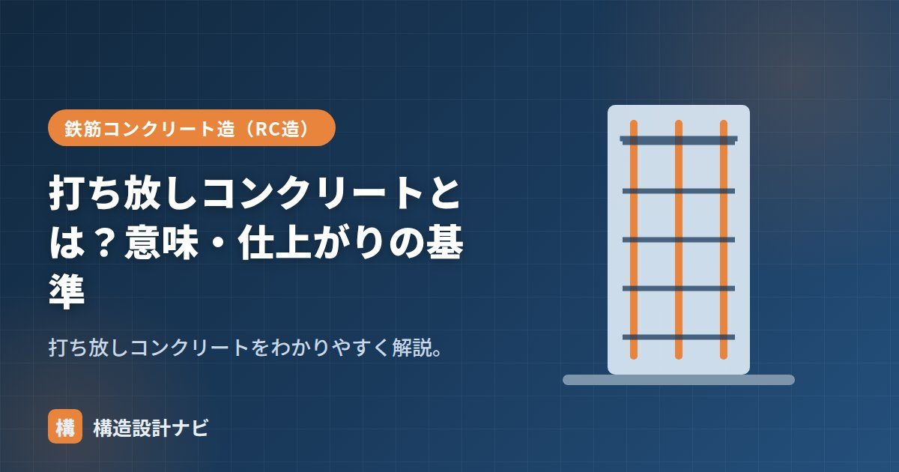

打ち放しコンクリートとは？意味・仕上がりの基準

打ち放しコンクリート（打放し）とは、型枠を外したコンクリートの面を、そのまま仕上げとして見せる方法です。タイルや塗装などの仕上げ材を貼らず、コンクリートの素地が意匠になります。英語では「exposed concrete（エクスポーズドコンクリート）」と呼ばれ、安藤忠雄氏の建築などで広く知られるようになった仕上げ方法です。仕上げ材でコンクリート面を覆い隠さない分、施工の巧拙がそのまま見た目に表れるため、構造・仕上げ双方の観点から高い施工精度が求められます。
- 打ち放しは型枠を外したコンクリート面をそのまま仕上げとする工法
- 後から仕上げ材で隠せないため、型枠・締固め・かぶり厚さの品質管理が特に重要
- 仕上がりの品質はJASS5などで種別（グレード）として基準化されている
意味
通常は躯体のコンクリートの上に仕上げ材を施しますが、打ち放しは型枠の跡（パネル割り・セパレータ穴）も含めてデザインとして活かします。コンクリートそのものの質感が出るため、シンプルでモダンな表現に使われます。型枠のパネル割りや、セパレータ（型枠を固定する金物）の穴の位置まで意匠として計画するため、意匠設計者と構造設計者・施工者が早い段階から打合せを行い、型枠割付図を作成するのが一般的です。
外壁・床などへの適用
- 外壁・内壁：打ち放しの代表的な適用部位。意匠性が高い。
- 床・天井：床は研磨・塗床と組み合わせることも。天井は梁・スラブ下を見せる。
- 外部に使う場合は、撥水材・保護塗装で中性化・汚れを防ぐことが多い。
特に外部の打ち放し仕上げは、雨水の浸入や中性化の進行がそのまま耐久性の低下につながります。表面に撥水材や透明の保護塗装を施すことで、美観を保ちながら中性化の進行を遅らせるのが一般的な対策です。定期的な点検・再塗装によるメンテナンスも欠かせません。
仕上がり状態の基準
打ち放しの仕上がりは、建築工事標準仕様書（JASS5など）で種別として品質の目安が示されます。表面の平滑さ、豆板（ジャンカ）・気泡・コールドジョイント・ひび割れなどの許容程度を、要求グレードに応じて定めます。一般に、見え方の要求が高い部位（エントランスホールなど）ほど厳しい種別が適用され、型枠の目地割り・締固めの管理も入念に行われます。
きれいに仕上げるためのポイント
打ち放しの美しい仕上がりを得るには、いくつかの工程管理が欠かせません。まず型枠の精度と清掃（剥離剤の均一な塗布・型枠内のゴミ除去）が基本です。打込み時は、材料分離やジャンカを防ぐため、コンクリートを一箇所に集中させず適切な高さ・速度で投入し、バイブレータによる締固めを丁寧に行います。また、鉄筋の位置がずれるとかぶり厚さ不足による将来の錆汁・爆裂の原因になるため、スペーサーで確実に固定することも重要です。型枠の取り外し時期も、コンクリート強度の発現状況を確認したうえで適切に判断します。
よくある注意点
打ち放しは意匠性が高い反面、コンクリートの弱点であるひび割れ・中性化がそのまま見た目に影響します。特に外部では、乾燥収縮ひび割れや豆板の補修跡が目立ちやすいため、設計段階でひび割れ誘発目地を計画したり、打継ぎ位置をデザイン上目立たない場所に設定するなどの配慮が必要です。
打ち放し仕上げの現場では、型枠の割付図が意匠と一致しているかを施工前に必ず確認します。セパレータ穴の位置がずれると後から直せないため、着工前の打合せに時間をかける価値がある工程だと感じています。
充填性は「高流動コンクリート」、ひび割れは「コンクリートの弱点」、全体像は「コンクリートの種類7選」をどうぞ。
仕上がりの基準（種別）
打ち放しコンクリートは、要求される仕上がりの精度によって種別が定められています。
| 種別 | 要求される仕上がり | 適用 |
|---|---|---|
| A種 | もっとも高い精度。表面の平坦さ・目違い・色ムラをほぼ許容しない | 意匠上特に重要な面。美観が最優先される部位 |
| B種 | 一般的な打ち放し。軽微な目違い・気泡は許容 | 標準的な打ち放し仕上げ |
| C種 | 精度の要求が低い。塗装などの下地となる面 | 仕上げ材を施す下地、目立たない部位 |
A種の打ち放しでは、型枠の材質・割付け・転用回数まで指定されます。新品または転用1回程度の高品位合板を使い、パネルの割付けとPコン（セパレーター端部）の位置を設計図で決めます。継ぎ目からのノロ漏れを完全に防ぐため、テープ処理も入念に行います。こうした手間がコストに直結するため、A種の採用範囲は限定するのが一般的です。
起きやすい不具合と対策
| 不具合 | 原因 | 対策 |
|---|---|---|
| 色ムラ | 型枠の材質・転用回数の差、はく離剤の塗りムラ、養生条件の差 | 型枠の条件をそろえる、はく離剤を均一に塗る |
| 気泡（あばた） | 締固め不足、型枠面に気泡が付着したまま | バイブレーターの適切な使用、型枠を軽く叩いて気泡を上昇させる |
| 目違い | 型枠パネルの段差 | 組立精度の管理、締付けの均一化 |
| ノロ漏れによる砂すじ | 型枠の継ぎ目のすき間 | 継ぎ目をテープ・目地材で確実にふさぐ |
| ひび割れ | 乾燥収縮、温度応力 | 誘発目地の計画、養生の徹底 |
打ち放しの最大の難しさは、脱型した瞬間に結果が確定することです。通常の仕上げなら下地の多少の不具合は仕上げ材で隠せますが、打ち放しではすべてが露出します。補修（目地の充填、色合わせの塗装）は可能ですが、補修跡自体が目立つため完全には隠せません。そのため、型枠の精度・打込み計画・締固め・養生のすべてにおいて、通常以上の管理が求められます。
よくある質問
Q1. 打ち放しコンクリートは防水しなくてよいのですか？
撥水材や表面保護材の塗布が推奨されます。コンクリート自体は水を通しにくいものの、微細なひび割れや打継ぎ部から水が浸入し、内部の鉄筋を腐食させたり、白華（エフロレッセンス）を生じさせたりします。意匠を損なわない透明の撥水材を塗布し、定期的に塗り替えるのが一般的な維持管理です。
Q2. 打ち放しはコストが安いのですか？
一概に安いとはいえません。仕上げ材の費用は不要になりますが、型枠の品質を高める費用、施工精度を確保するための手間、補修費用が増加します。特にA種のような高い精度を求める場合、総合的にはタイル張りや吹付け仕上げより高くつくこともあります。意匠上の要求として選択されるもので、コスト削減が目的ではありません。
Q3. 打ち放しの補修はどのように行いますか？
気泡やジャンカは、周辺と色調を合わせたモルタルで充填します。色ムラは、コンクリート用の着色材で調整します。いずれも周囲との違和感が生じないよう、試験施工で色を合わせてから本施工に入ります。補修の技術は職人の技量に大きく依存し、専門の補修業者が担当することも多くあります。ひび割れについては、樹脂注入のうえ表面を調整します。
まとめ
- 打ち放しコンクリートは型枠を外した面をそのまま仕上げとする方法。
- 外壁・床・天井に使われ、外部では保護塗装を併用することが多い。
- 仕上がりは種別で基準化。やり直せないため型枠・締固め・かぶりが重要。
- 美しい仕上がりには型枠精度・締固め・かぶり厚さ管理・目地計画が欠かせない。